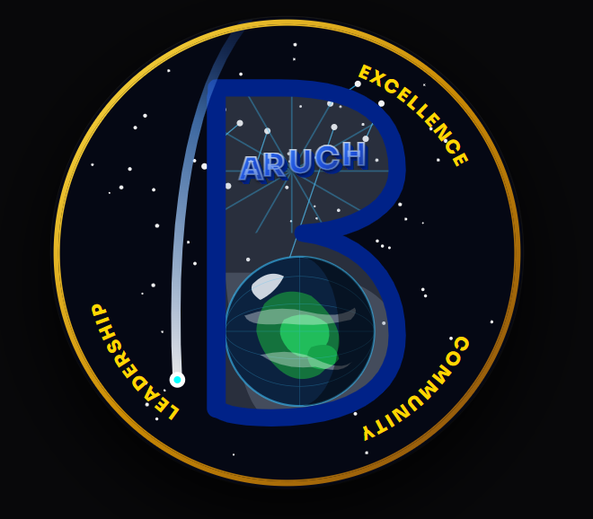

Final Patch

What does your patch represent?
The patch represents Baruch’s commitment to helping college students embrace their curiosity, pursue their ambitions, and reach great heights through their education. Baruch holds excellence, community, and success to the highest standards. The college is invested in each and every one of its students.
Individuals who attend Baruch will become stronger, wiser, and more successful with the help of Baruch professors, mentors, and peers. This patch symbolizes Baruch’s integrity and commitment to keeping this promise and ensuring that future generations of students continue to invest in their education and achieve success in their future endeavors.
What symbols or imagery did you choose, and why?
I chose to honor Baruch by making the letter B the primary focus of the patch. Just like any other brand or company, this B was designed to make a statement and become the defining symbol of the Baruch patch.
The sky and stars symbolize infinity and endless possibilities. The Earth on the lower lobe of the B ties into the space theme while also connecting to Baruch, as its students come from all parts of the world and have diverse backgrounds.
The gold words "Excellence," "Community," and "Leadership" define Baruch’s identity and represent the values students should gain from their experience at the college.
How does the design reflect Baruch’s participation in scientific research and discovery in space?
This design reflects Baruch’s participation in scientific research and discovery in space because it demonstrates the college’s desire to empower its students and provide them with opportunities that extend beyond their education.
Baruch encourages us to take risks, be proud of our accomplishments, and learn from those around us. Similarly, space exploration is extraordinary and has a significant impact on our future. Those fortunate enough to have the opportunity to explore space are future leaders, ambitious individuals, and lifelong learners who are constantly growing and developing within their fields.
A.I. Disclosure for Final Design
Yes, AI tools were used during the development of this design. Specifically, Google Gemini was used to construct the generative tool for the mission patch. All elements of the webpage, including the design execution and HTML code, were created using this AI platform.